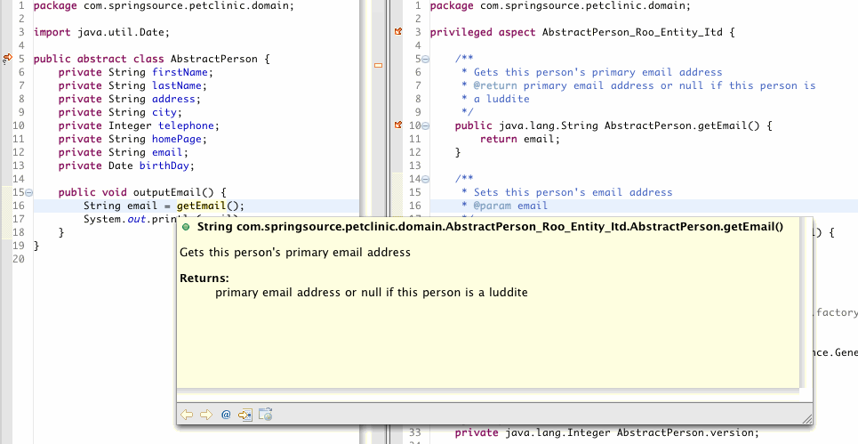
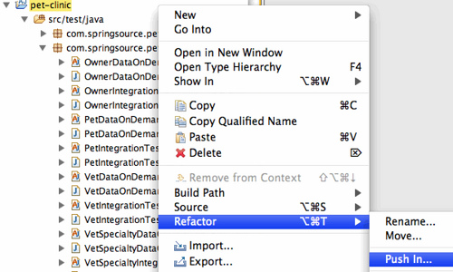
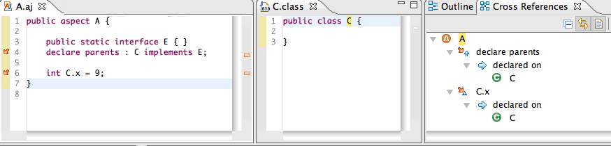
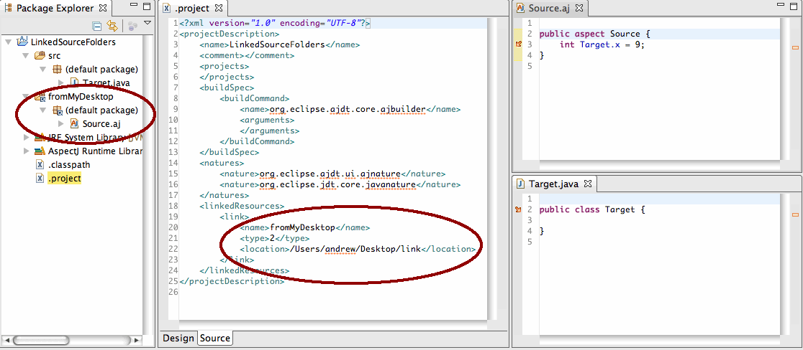
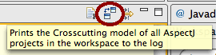
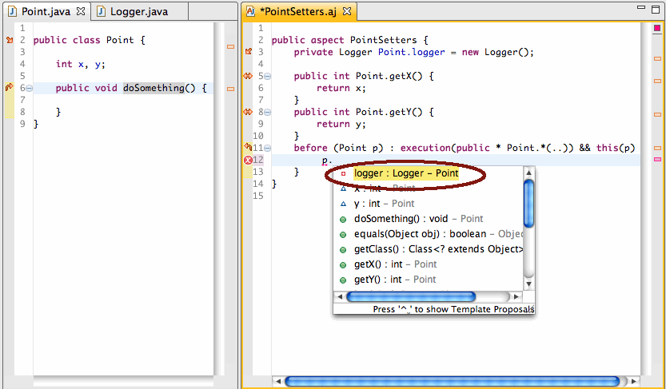
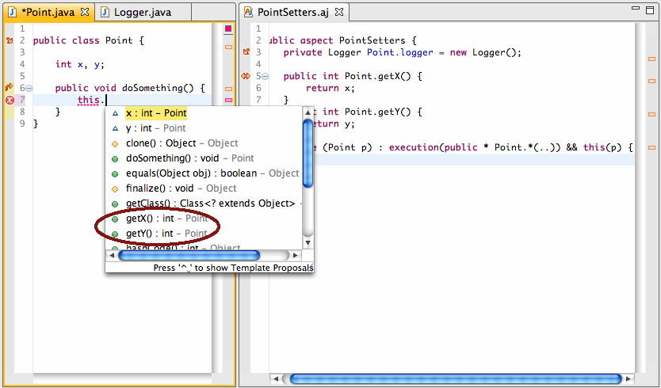

| Overview and new versioning scheme |
Today, we introduce AJDT 2.0. Over the past year, there have been many changes to this project.
Some have been functional: better intertype declaration support, Java search support for Aspects, Aspect-aware reconciling, etc.
Some have been non-functional: faster and more robust incremental builds, better inter-project dependency analysis. Some have been
structural and API: a new, more compact, and incrementally updated crosscutting model. Some have been fundamental: using AspectJ to weave
into JDT to provide better Eclipse integration.
All these changes so far have been crammed into 1.6 maintenance releases due to the tradition of pegging AJDT minor versions (e.g., 1.6) to Eclipse minor versions (e.g., 3.4). We now believe that this tradition has outlived its usefulness and is proving to be more confusing than helpful for users. For the current and future releases of AJDT, we have decided to move towards a more common use of versioning based on feature and API changes. From now on, changes to the micro part of the version number will indicate only trivial functionality changes and bug fixes. Changes to the minor part of version number will indicate that no major functionality or API has been introduced or changed. And changes to the major part of the version number will indicate that the new version has some significant enhancements in it. AJDT releases targeting different Eclipse versions will use the same major.minor.micro scheme, but
there will be a noticeable difference in the qualifier. For example:
So this means that AJDT 1.6.5 has been renamed AJDT 2.0.0_e34x and AJDT 1.7.0 has been renamed AJDT 2.0.0_e35x. Although this is potentially confusing in the short term, we believe in the long term, this will be more informative and users will be able to read the version and immediately know which Eclipse version it targets and also what feature level it contains. With that important bit of information explained, below are the bug fixes and new features introduced in the 2.0 release since AJDT 1.6.4. |
||||
|
|
|||||
| ITD Hovers and Hyperlinking |
AJDT now supports ITD-aware text hovers and hyperlinking. Hovering over a method that is declared as an ITD will display the JavaDoc of that method:  Similarly, pressing F3 or CTRL-Click on an identifier that is declared as an ITD will navigate to the ITD's declaration:
For more information, see Bug 273334. Note, like all other ITD awareness support, a successful build since the last restart of the workspace is required. |
||||
|
|
|||||
| Push-In refactoring |
In AJDT 2.0, we have introduced the new Push-In refactoring. Essentially, the refactoring pushes intertype declarations into their target types. So, when a push in refactoring is applied to the following aspect and class:
the result is: The Foo aspect is deleted because it is empty. This refactoring is available from the package explorer, the outline view, and wherever else Java elements appear in a hierarchy. To use, select the ITDs or set of ITDs that you want to push in. You can select an entire project, source folder, or package to push all of its ITDs into the target types:  See AJDT's blog for a detailed explanation of the refactoring. |
||||
|
| |||||
| Crosscutting support for ITDs on the inpath |
AJDT now shows ITD and declare parents relationships that are targeting elements on the inpath. For example,
below are a simple aspect and a simple class that is on the inpath. The inpath relationships now appear
in the gutter marker and in the X Refs view (C is a class that is on the inpath).
 Note that we do not support displaying advice relationships on the inpath, nor do we show the inverse relationship on the inpath. See Bug 273086 and Bug 273087 respectively. More information can be found in Bug 271269. |
||||
|
| |||||
| Linked source folders |
AJDT now supports linked source folders. In the image below, you can see that crosscutting relationships
can apply across linked folders. Here, the fromMyDesktop folder is a linked source folder
to the file system directory /Users/andrew/Desktop/link.
 Note that we typically recommend using linked source folders instead of inpath relationships where possible. The reason is that the AspectJ compiler can perform better incremental analysis on linked folders than it can with inpath folders. This is because linked folders are considered part of the source of project and the compiler stores more specific state on these kinds of folders. More information can be found in Bug 253555 and Bug 275903. |
||||
|
| |||||
| AJDT Event Trace enhancements |
It is now possible to print the hierarchies and relationship maps of all projects
in the workspace into the event trace view. This information can be accessed by clicking on the this button
in the AJDT Event Trace view:  in the AJDT Event Trace view. For example, the hierarchy and relationship map for the DeclareParents on Inpath project displayed above is:
9:2:18 Printing crosscutting model for all AspectJ projects in the workspace
9:2:18
9:2:18 --------------------------------------
9:2:18 Printing crosscutting model for DeclareParents on Inpath
9:2:18
Hierarchy:
=DeclareParents on Inpath/src
=DeclareParents on Inpath/src<
=DeclareParents on Inpath/src<*A.aj
=DeclareParents on Inpath/src<*A.aj#
=DeclareParents on Inpath/src<*A.aj}A
=DeclareParents on Inpath/src<*A.aj}A[E
=DeclareParents on Inpath/src<*A.aj}A`declare parents
=DeclareParents on Inpath/src<*A.aj}A)C.x
Relationship map:
=DeclareParents on Inpath/src<*A.aj}A)C.x ::
=DeclareParents on Inpath/src<*A.aj}A)C.x --declared on--> [=DeclareParents on Inpath/,<(C.class[C]
=DeclareParents on Inpath/,<(C.class[C ::
=DeclareParents on Inpath/,<(C.class[C --aspect declarations-->
[=DeclareParents on Inpath/binaries<*AnotherAspect.aj}AnotherAspect`declare parents,
=DeclareParents on Inpath/src<*A.aj}A`declare parents, =DeclareParents on Inpath/src<*A.aj}A)C.x]
=DeclareParents on Inpath/src<*A.aj}A`declare parents ::
=DeclareParents on Inpath/src<*A.aj}A`declare parents --declared on--> [=DeclareParents on Inpath/,<(C.class[C]
9:2:18 --------------------------------------
The information spit out here corresponds to internal handles used by AspectJ and AJDT to
describe the crosscutting relationships in a project. These handles correspond to program elements
that represent things like advice declarations, method declarations, source folders, etc.
Although this feature is meant for diagnostic purposes,
it can be used to introspect your project and help you understand a little more about AJDT and AspectJ internals.
Warning: the crosscutting model can be large and dump significant amount of text to the Event Trace view.
More information can be found in Bug 271668 |
||||
|
| |||||
| Better support for AJDT and Maven |
In the past, users of Maven and AJDT who are not using the m2eclipse
maven integration plugin for Eclipse could not specify Aspect path elements
through the pom.xml. Additionally, the projects would often be erroneously
configured with the an extra javaBuilder.
AJDT 2.0.0 now addresses both of these issues in a generic way. To specify aspects libraries to go
on the aspect path from within a pom.xml, add the following:
<plugin>
<groupId>org.apache.maven.plugins</groupId>
<artifactId>maven-eclipse-plugin</artifactId>
<version>2.5.1</version>
<configuration>
<additionalBuildcommands>
<buildCommand>
<name>org.eclipse.ajdt.core.ajbuilder</name>
<arguments>
<aspectPath>org.springframework.aspects,org.springframework.aop</aspectPath>
</arguments>
</buildCommand>
</additionalBuildcommands>
<additionalProjectnatures>
<projectnature>org.eclipse.ajdt.ui.ajnature</projectnature>
</additionalProjectnatures>
</configuration>
</plugin>
Inside the arguments element, specify a comma separated list of aspectPath elements. The
builder then looks for any jar file or binary folder on the raw classpath that contains the specified string. So,
the above would add any of org.springframework.aspects_2.5.1.jar, org.springframework.aspects_3.0.0.jar,
or org.springframework.aop_2.5.1.jar onto the aspect path of the project if the jar files already
exist on the classpath.
Note the use of version 2.5.1. Unfortunately, version 2.6 of the Maven-Eclipse-Plugin does not support AJDT. Version 2.7 should fix this problem. More information can be found in Bug 270552, Bug 270554, and MECLIPSE-538. |
||||
|
| |||||
| Scoping for ITDs in content assist |
Intertype declarations will now only appear in content assist if they are properly accessible in the current
scope. For example, the following two editors show a Point class and an aspect that
inserts ITDs into it. In this first image, you can see that the content assist in the PointSetters aspect
correctly shows the logger field, which is private to PointSetters:
 In this second image, the content assist inside of Point does not show the logger field, but still shows the getX and getY methods.  More information can be found in Bug 272547 |
||||
|
|
|||||
| Bug Fixes | Here are some interesting statistics from our friendly Bugzilla database Why April '08? That's when we added someone full time to work on AJDT, and breathed new life into the project. | ||||
|
|
|||||
| Thanks! |
Thanks to those of you who have submitted patches, bug reports, and contributed to the mailing list for this release.
We appreciate your help.
Also, AJDT is spreading. The Scala-Eclipse plugin is now using JDT Weaving to make its JDT integration deeper and more robust. |
||||
|
|
|||||
| Previous Releases | See here for information on the new features in AJDT 1.6.4. | ||||